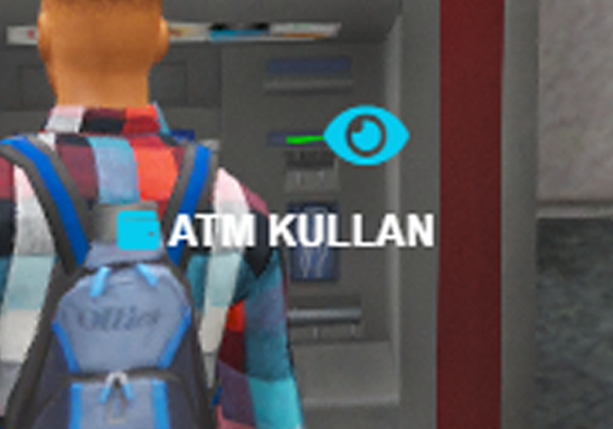

ROLEPLAY
- Discord: OnlyEstate#0716 - Onlyest#1000
- TeamSpeak ve TokoVOIP pluginin kurulu olduğundan emin olun. Kurulu değilse discord üzerinden dosyalara erişim sağlayabilirsiniz.
- GTA 5'in kendi ses sistemi olan Voice Chat ayarını kapatın. ESC > Settings > Voice Chat
- Karakterinizin kıyafetlerini ve yüzünü tamamlayıp kaydedin.
- /hud komutu ile HUD'ı kapatıp açabilirsiniz.
- Oyuncu ID'nizi görmek için PageLP tuşunu veya /id komutunu kullanabilirsiniz.
- Z tuşu işe ses seviyenizi Fısıltı-Normal-Bağırma modları arasında değiştirebilirsiniz.
- Envanterinizi F2 tuşuyla açabilir, kullanımını "?" butonundan öğrenebilirsiniz.
- Telefonunuza F1 tuşuyla erişebilir, ayarlar kısmından kişiselleştirebilirsiniz.
- Herhangi bir sorunla karşılaşırsanız Discord üzerinden Developerlar ile iletişime geçebilirsiniz.
- Alana giriş için saati bekle :)
- Karakterinizin kıyafetlerini ve yüzünü tamamlayıp kaydedin.
- /hud komutu ile HUD'ı kapatıp açabilirsiniz.
- Oyuncu ID'nizi görmek için PageLP tuşunu veya /id komutunu kullanabilirsiniz.
- Z tuşu işe ses seviyenizi Fısıltı-Normal-Bağırma modları arasında değiştirebilirsiniz.
- Envanterinizi F2 tuşuyla açabilir, kullanımını ? butonundan öğrenebilirsiniz.
- Telefonunuza F1 tuşuyla erişebilir, ayarlar kısmından kişiselleştirebilirsiniz.
- Herhangi bir sorunla karşılaşırsanız Discord üzerinden Developerlar ile iletişime geçebilirsiniz.
- Alana giriş için saati bekle :)
- Discord: OnlyEstate#0716 - Onlyest#1000
- Banka, atm vb. şeyleri kullanmak için sol alt tuşuna basın 
- Buraya istediğin resimleri ekleyebilirsin
- Buraya istediğin resimleri ekleyebilirsin
- Buraya istediğin resimleri ekleyebilirsin

- Buraya istediğin resimleri ekleyebilirsin
Light Mode
Dark Mode